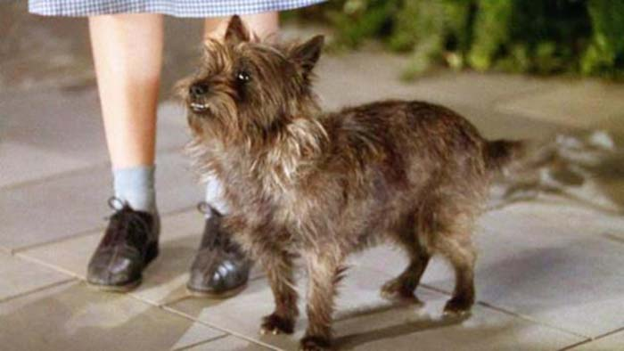
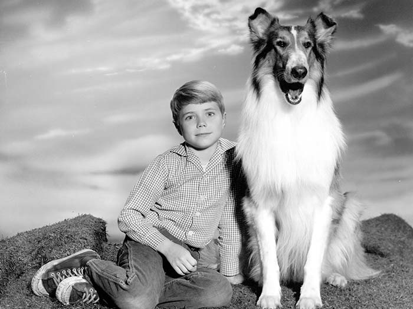

All about puppies!

Basic info
I do not have a pup but I want a type of puppy called a Cavapoo. They are an attractive dog who is intelligent and has a gentle temperament making it ideal for families as it thrives on human companionship. They get on well with other cats and dogs but have a high need for human companionship. The Cavapoo needs little exercise as it is always busy, but a nice walk will keep your dog fit and socialised.
Why Puppies Make Great Pets
Dogs will keep you active, having a dog is good for your health as they absolutely must get exercise. Take your dog on a daily walk or jog so that you can both get your heart rates up and de-stress. Walking just 20 minutes a day with your pup can reduce your risk of heart disease by 8 percent.
A dog can make you feel less alone, one of the reasons why dogs make good pets is because they help with loneliness. There are times in life where we aren’t surrounded by lots of friends and family members. During these times, having a dog as a companion can be very comforting.Dogs love being around their owners and love to please them. You’ll always have your dog to cuddle with, eat dinner with, or head to a dog-friendly bar. You’ll discover quickly that your dog will become your most loyal friend.
Dogs relieve stress. Petting a dog is proven to be good for relieving anxiety. Your dog doesn’t have to be a licensed therapy dog to bring you these benefits. Petting your dog increases feelings of contentment and relaxation. Unlike most cats, dogs love the affection and attention of petting.
<
Top Three Most Famous Dogs
- Toto, the Cairn Terrier

- Rin Tin Tin, the German Shepherd

- Lassie, the Rough Collie
